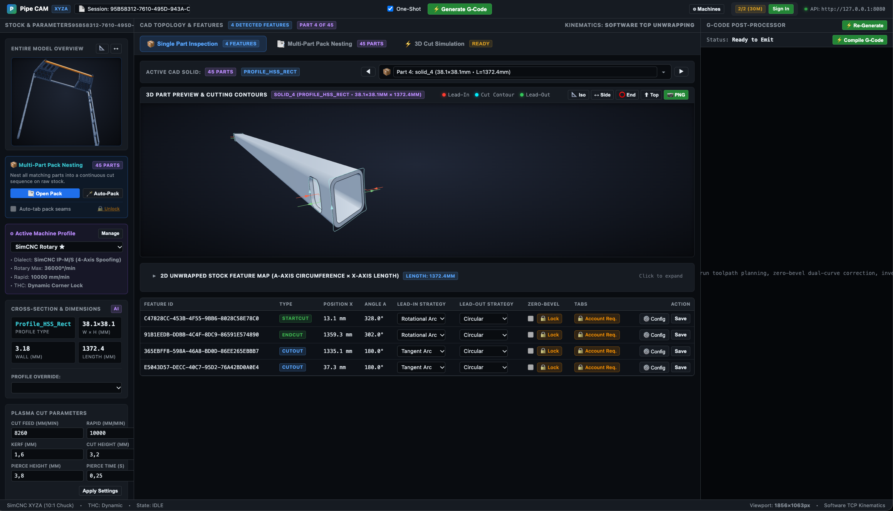
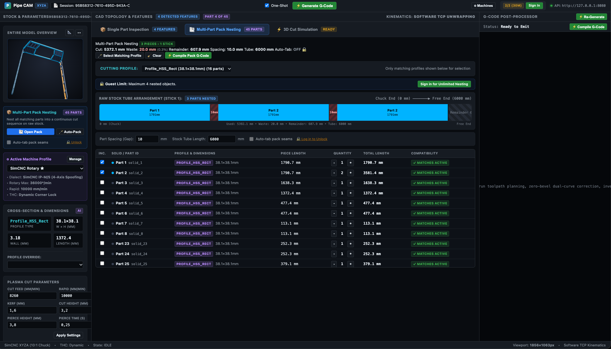

100% OFFLINE DESKTOP & WEB APP•ZERO CLOUD • ZERO 2D UNROLLING
Raw 3D CAD Assemblies In. Clean 4-Axis Plasma G-Code Out.
Stop wasting hours flattening 3D tubing into distorted 2D DXFs in CAD. Drop your finished 3D CAD frame, roll cage, or truss straight into RotaryCAM. It detects your pipe, tube, cope, and hole cuts automatically, calculates zero-gap saddle joints that fit tight with no grinder work, and outputs machine-ready G-code for your 4-axis rotary plasma table.
Free during beta • Built for SimCNC & standard 4-axis controllers
RotaryCAM Web — 3D CAD Assembly Inspection

See RotaryCAM in Action
From full 3D CAD chassis frames to nested mill sticks and clean torch paths ready to cut.
STANDALONE OFFLINE DESKTOP APP
Native Desktop App — 100% Offline at the Plasma Table
Built for harsh shop-floor environments with zero internet required. Runs completely offline on your shop PC or Mac with high-speed 3D graphics, local CAD processing, and built-in cut charts (amperage, feedrate, pierce height, arc voltage, and kerf width). Your proprietary CAD designs never leave your machine.
Stick Nesting — Cut Full Bundles with Minimum Scrap Drop
Group and pack parts end-to-end along standard 20ft / 24ft / 6m mill sticks (shown: 6000mm stick with only 0.3% scrap waste). Cuts sequentially from the free end back toward the chuck so your stock stays rigid, with thermal hops to keep tubes from banana-bowing.
20ft/24ft Mill Sticks99%+ Material YieldRigid Chuck GripThermal Jump Sequencing

3D TORCH SIMULATION
Live 3D Cut Simulation — Catch Torch Crashes Before Striking an Arc
Inspect the exact torch path in 3D before cutting metal. Simulates chuck rotation (A), carriage travel (X), torch slide (Y), and height control (Z). Verifies real-time cutting feedrate, torch height transitions, and corner anti-dive locks.
Machine Profiles & Hardware Torch Height Control (THC)
Lock your Torch Height Control over tube corners so the torch never dives into the metal. Direct M62/M63 high-speed digital output pins and SimCNC macros stop torch diving, slow down around sharp corners, and tailor G-code to SimCNC, Mach4, LinuxCNC, or Masso.
Fabrication shops run on reliability, not cloud subscriptions. RotaryCAM runs entirely on your local machine. No internet required next to your plasma table, no cloud servers processing your files, and no risk of leaked customer drawings.
✓ Runs Next to Table
✓ Air-Gapped Ready
✓ Zero Model Uploads
BUILT FOR FABRICATORS
Engineered for rotary plasma cutting. Not rolled 2D sheet metal.
Standard plasma software was built for flat tables and treats tubes like rolled sheet metal. RotaryCAM solves the real-world shop problems of 4-axis cutting directly from your 3D models.
01 / NO CAD UNROLLING
Cut Straight from 3D CAD Models
Never unroll tubing into flat 2D DXF sheets again. RotaryCAM inspects your solid 3D CAD files directly, measuring exact outside dimensions, wall thickness, and corner radii automatically. It spots end miters, saddles, copes, and bolt holes without you clicking a single face.
Zero 2D DXF UnrollingAutomatic Wall ThicknessFull Assembly Import
02 / PERFECT FITUP
Zero-Gap Saddles & Fishmouths Ready to Weld
When a straight torch cuts an angled pipe fishmouth, the inside wall can stick out and leave ugly gaps that need hours of grinding. RotaryCAM's dual-curve compensation cuts to the inside cylinder line—giving you tight, flush fitup right off the machine with zero grinding or gap wedges needed.
When your rotary chuck spins, standard controllers miscalculate speed—crawling along flats and racing around corners, burning through thin walls. RotaryCAM calculates true surface torch velocity on every block, keeping your cutting speed rock-steady for clean dross-free edges on SimCNC, Mach4, and LinuxCNC.
Spinning square tube around a 90° corner requires immense rotary speed that can stall stepper motors or jerk your chuck. RotaryCAM smooths rotary acceleration around corners and automatically signals your Torch Height Control (THC) to freeze, preventing the torch from diving into the tube.
Plasma swirl gas creates a square cut on one side and a bevel on the other. RotaryCAM cuts clockwise on outside profiles and counter-clockwise inside holes so the clean, square edge stays on your finished part. 3D ramped lead-ins protect your nozzle shield from pierce spatter, and early arc extinguish eliminates starting divots.
Square Cut EdgesNo Pierce Spatter on NozzlesZero Start/Stop Divots
06 / MATERIAL SAVINGS
Stick Nesting & Anti-Warp Thermal Sequencing
Cut entire projects out of standard 20ft / 24ft mill sticks with less than 1% scrap drop. RotaryCAM cuts parts from the free end back toward the chuck so your stick never loses clamping rigidity. Thermal jumping spreads heat along the stick to prevent your tubes from banana-bowing.
Drop bent round pipe or square/rectangular HSS frames straight into RotaryCAM. It automatically unfolds the curved 3D shape onto a straight mill stick with mitered pie-cut relief slots and an uncut living-hinge spine. Dead-straight cheek cuts across flat HSS faces with inner-wall clearance mean thick steel tube bends cleanly by hand and welds shut with zero grinding.
Stop hunting through paper manuals. RotaryCAM includes 552 factory Hypertherm Powermax 45/65/85/105 SYNC Rev 4 presets across Mild Steel, Stainless, and Aluminum. When you drop a STEP file, it detects your tube's wall thickness and auto-loads cut speed, arc voltage, pierce delay, and kerf width.
Don't send models back to the engineering department just to skip a hole. RotaryCAM gives you interactive checkboxes for every detected hole, slot, and cutout. Uncheck any contour to instantly drop it from the toolpath, reduce pierce counts, and recompile live G-code while cutoff cuts stay locked.
Zero CAD Revision WaitingInstant G-Code RecompilePermanent Sever Cut Safety
STOCK & CONTROLLERS
Supported Tubing & CNC Plasma Controllers
Cuts standard mill stock from 1/8" pipe up to heavy structural tubing, with post-processors tailored to your table's controller.
SUPPORTED TUBING & PROFILES
Complete Structural Tubing Range
Handles round pipe, square tube, angle iron, and plate with dedicated toolpaths:
▸Round Pipe & Tubing: 1/8" pipe up to 16" heavy casing
▸Square & Rectangular Tubing (HSS): 1/2" up to 16"+ with corner radius tracking
▸Structural Angle Iron: Equal & unequal leg L-profile with heel tracking
▸Flat Sheet & Plate: Cut brackets, tabs, and gussets on the same table
ASTM / AISC Imperial StandardEN 10210 / ISO Metric Sizing
CONTROLLER POST-PROCESSORS
Ready-to-Cut Controller Post-Processors
Clean G-code formatted for the exact motion limits and macro signals of your CNC plasma controller:
▸CSLab SimCNC (IP-M / IP-S): 4D rotary speed scaling, dynamic THC freeze, and current throttling
▸Mach4 4-Axis: Clean multi-axis G-code with synchronized M-code macros
▸LinuxCNC: Coordinated XYZA motion with look-ahead and acceleration limits
▸Masso G3: Direct rotary post with smooth continuous velocity
Hardware Digital Pins (M62/M63)Instant Post Generation
SHOP-READY G-CODE
Eliminate torch crashes, burnt corners, and ugly fitups.
Standard CNC controllers don't know how to handle 4-axis rotary plasma cutting. RotaryCAM solves the real-world shop problems before the G-code reaches your machine: steady surface speeds, corner THC freezing, clean bevel fitups, and nozzle-saving lead-ins.
✓ Constant torch travel speed on round pipe and square tube
✓ Smooth corner rotation so chuck motors never stall
✓ Automatic THC anti-dive freeze on square corners
✓ Early arc shutoff to eliminate ugly start/stop divots
✓ 3D ramp lead-ins that blow piercing slag away from nozzles
Real-Time 3D Simulation & Torch Motion Verification
Verify every cut, pierce, and torch height change right in your browser or desktop app before hitting cycle start.
01 / INSTANT CAD
Instant 3D CAD Preview
Open full STEP assembly files directly on your machine in seconds. No waiting for slow cloud servers to upload or process your drawings.
02 / ACCURATE STOCK
Realistic Tube & Kerf Preview
Shows real hollow tube geometry with actual wall thickness and corner fillets. Color-coded cut lines show rapid moves, pierces, kerf widths, and micro-tabs.
03 / FULL MOTION
4-Axis Digital Readout & Playback
Watch the chuck spin and the torch slide in real time. Digital readouts track exact X, Y, Z, and A coordinates, cut speeds, and total job cycle time.
Information pursuant to Section 5 of the German Telemedia Act (TMG) and applicable digital services regulations:
Operator & Domain Owner: Raphael Randschau Application & Service: RotaryCAM.app General Inquiries:contact@rotarycam.app Technical Support & Feedback:support@rotarycam.app Website Hosting: GitHub Pages, GitHub Inc., 88 Colin P Kelly Jr St, San Francisco, CA 94107, USA (Custom Domain Routing: rotarycam.app via Cloudflare).
2. Mandatory CNC Plasma Machine Safety Disclaimer
EXTREME PHYSICAL & ELECTRICAL HAZARDS: CNC plasma cutting involves lethal open-circuit voltages (>100–300V DC), high-intensity ultraviolet (UV) and infrared (IR) arc radiation capable of causing permanent ocular damage, plasma jet temperatures exceeding 20,000°C (36,000°F), high-velocity molten metal dross/slag, severe fire hazards, toxic fumes (including ozone, hexavalent chromium, and nitrogen oxides), and mechanical crushing / entanglement hazards from motorized gantries and high-torque 4th-axis rotary chucks.
OPERATOR RESPONSIBILITY & MANDATORY DRY RUNS: RotaryCAM is a toolpath calculation and G-code generation program. It cannot physically sense machine travel limits, torch collision envelopes, chuck jaw clearance, fixture interference, earth grounding adequacy, or ventilation status. You, the machine operator, are exclusively responsible for verifying toolpaths before running live cutting cycles.
MANDATORY DRY RUN / AIR CUT: Prior to cutting any new program or unverified G-code, you MUST perform a complete "dry run" / "air cut" with the plasma torch turned off, pilot arc disabled, and the Z-axis retracted above any collision danger. Visually verify rotary chuck clearance, continuous 360° rotation cable wrap, coordinate system origins (X0, Y0, Z0, A0), and feedrate scaling.
DISCLAIMER OF LIABILITY: Under no circumstances shall the creators, maintainers, or contributors of RotaryCAM be held liable for personal injury, electric shock, flash burns, death, fire, property damage, machine crashes, torch head destruction, ruined raw materials, or lost commercial production resulting from the use or misuse of G-code or toolpaths generated by RotaryCAM.
3. "AS IS" Software Warranty & Limitation of Liability
THE SOFTWARE IS PROVIDED "AS IS", WITHOUT WARRANTY OF ANY KIND, EXPRESS OR IMPLIED, INCLUDING BUT NOT LIMITED TO THE WARRANTIES OF MERCHANTABILITY, FITNESS FOR A PARTICULAR PURPOSE, TITLE, AND NONINFRINGEMENT.
IN NO EVENT SHALL THE AUTHORS OR COPYRIGHT HOLDERS BE LIABLE FOR ANY DIRECT, INDIRECT, INCIDENTAL, SPECIAL, EXEMPLARY, OR CONSEQUENTIAL DAMAGES (INCLUDING, BUT NOT LIMITED TO, PROCUREMENT OF SUBSTITUTE GOODS OR SERVICES; LOSS OF USE, DATA, OR PROFITS; OR BUSINESS INTERRUPTION) HOWEVER CAUSED AND ON ANY THEORY OF LIABILITY, WHETHER IN CONTRACT, STRICT LIABILITY, OR TORT (INCLUDING NEGLIGENCE OR OTHERWISE) ARISING IN ANY WAY OUT OF THE USE OF THIS SOFTWARE, EVEN IF ADVISED OF THE POSSIBILITY OF SUCH DAMAGE.
Pre-Release Beta Software: RotaryCAM is in active beta development (v0.2-BETA). Geometry recognition algorithms, kinematic feedrate scaling calculations, and CNC post-processors are subject to continuous updates and modifications. Users must validate all generated cut paths against their specific controller manual and machine safety configurations.
4. Trademarks & Third-Party Compatibility
RotaryCAM is an independent CAM utility developed independently of machine controller manufacturers and CAD vendors. The following trademarks and trade names are cited on this website strictly for technical identification and interoperability purposes:
CSLab® / SimCNC™ / CSMIO™ are registered trademarks of CSLab s.c. (Poland).
Mach4® / Mach3® are registered trademarks of Newfangled Solutions LLC / Artsoft.
LinuxCNC is a trademark of the LinuxCNC open-source community project.
MASSO® is a registered trademark of Hind Technology Pty Ltd.
OpenCASCADE™ is a trademark of Open CASCADE SAS.
macOS® / Metal® / Apple® are registered trademarks of Apple Inc.
RotaryCAM is not officially affiliated with, endorsed by, sponsored by, or partnered with any of the above entities. Reference to these systems reflects only software output compatibility with their standard CNC dialects and motion kinematics.
5. Data Privacy & Local CAD Processing (Datenschutz)
Air-Gapped, Local-Only CAD Processing: We respect fabricator trade secrets and client proprietary CAD designs. Both the RotaryCAM desktop application and the client-side WebGL in-browser toolpath preview process 3D STEP files (AP203, AP214, AP242) entirely on your local machine's CPU and GPU. Your CAD models, part geometries, dimensions, and customer projects are NEVER uploaded to any cloud server, database, or remote service.
Beta Waitlist Data: If you voluntarily submit your contact information via our early access form (hosted securely by Google Forms), your information (email, name, machine controller specs) is stored exclusively to notify you of private beta releases and technical updates. We never sell, rent, or distribute your email address to advertisers or external third parties. You may request removal of your email from the waitlist at any time by contacting contact@rotarycam.app.
Server Logs: When accessing this website, standard technical connection metadata (IP address, browser type, referral header, timestamp) may be logged by GitHub Pages for network security and content delivery diagnostics in accordance with GitHub's standard privacy practices. No tracking pixels, third-party advertising cookies, or fingerprinting scripts are used on rotarycam.app.